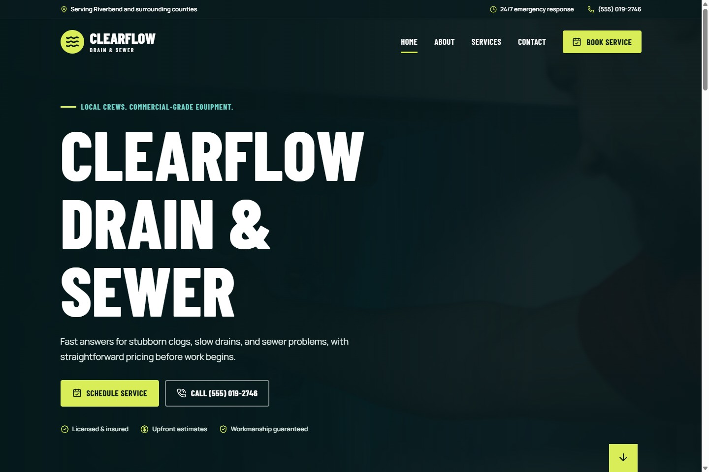
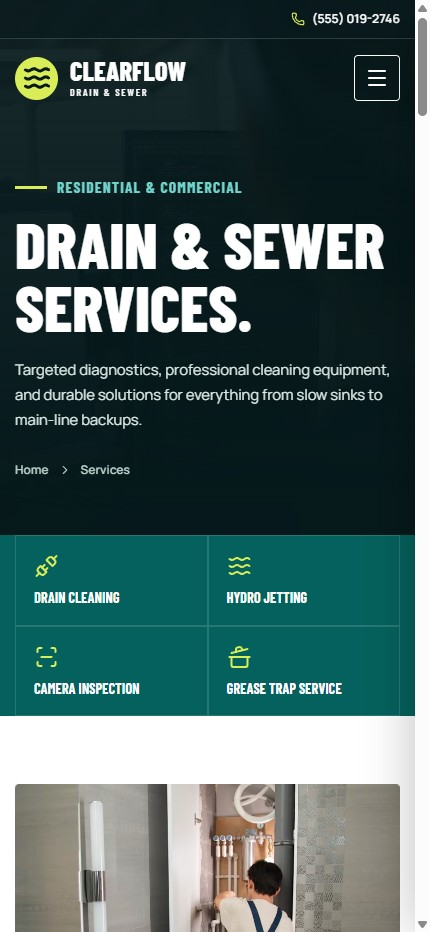
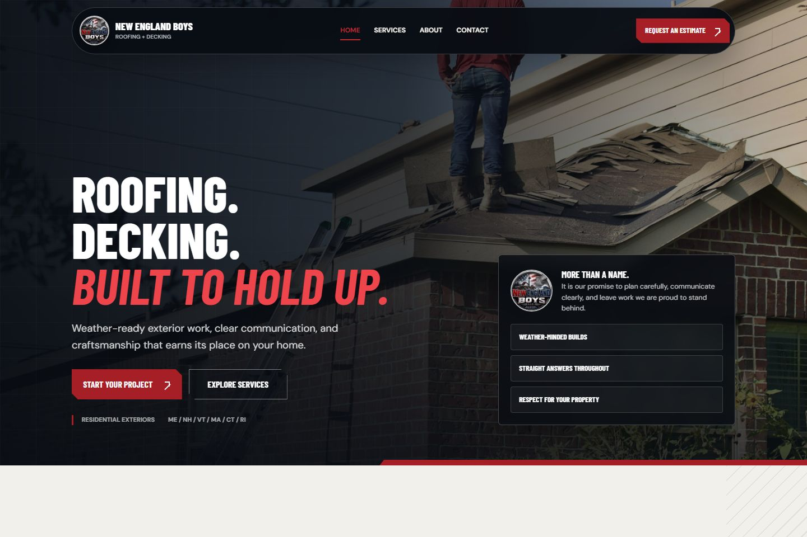
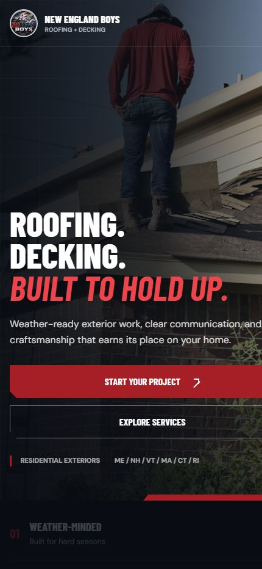

Modern Cloud & Enterprise Technologies
Designing scalable enterprise solutions using modern cloud-native and distributed application architectures.
Software engineering + thoughtful design
I turn complex business needs into clear, durable digital products, from enterprise architecture to the interface people use every day.
About me
I bring an engineer's rigor, an architect's perspective, and a designer's attention to every engagement.
My passion for technology started in the early 1980s when gaming systems and home computers first began transforming how people interacted with technology. I was fascinated by systems like the Apple II, Commodore 64, and TI-99/4A, spending countless hours exploring how they worked, experimenting with software, and learning the fundamentals of computing long before software engineering became my profession.
That early curiosity evolved into a lifelong career designing and building enterprise software solutions across multiple industries. Over the years, I have continuously adapted to new technologies, frameworks, architectures, and development methodologies — from desktop applications and client/server systems to cloud-native platforms, distributed architectures, and modern web applications.
Today, I specialize in modern Microsoft technologies including .NET Core, Blazor Server, Blazor WebAssembly, ASP.NET Core, Azure cloud services, Kubernetes, REST APIs, PostgreSQL, SQL Server, and enterprise application modernization. I have extensive experience architecting scalable multi-tenant applications, designing cloud-hosted systems, integrating third-party platforms, and leading teams through complex software initiatives.
My experience spans enterprise dashboards, financial systems, insurance claim platforms, e-commerce applications, reporting engines, mobile integrations, CMS solutions, and business automation platforms. I enjoy solving difficult technical challenges while mentoring teams and helping organizations modernize legacy systems into scalable, maintainable solutions.
One of my greatest strengths as an engineer is adaptability. Throughout my career, I have consistently learned new technologies and tech stacks as business needs evolved. Whether transitioning from WinForms to web applications, adopting cloud-native architectures, implementing Kubernetes deployments, or embracing modern frameworks like Blazor and ABP.IO, I thrive on learning and applying emerging technologies to deliver real business value.
Technical expertise
From architecture decisions to production interfaces, I work across the stack to keep complex platforms coherent, scalable, and useful.
Designing scalable enterprise solutions using modern cloud-native and distributed application architectures.
Building responsive web applications, enterprise dashboards, reporting systems, and integrated business platforms.
Modernizing legacy systems and guiding organizations through evolving technology landscapes.
Selected web design
Responsive service websites shaped around each business, from building local visibility to presenting skilled work with clarity and confidence.


Small business visibility
A responsive website designed to give a small drain service business greater visibility, build local trust, and turn urgent service needs into calls and bookings.
Open live sample

Construction services
A bold, responsive website for a roofing and decking company, designed to communicate durability, regional expertise, and a straightforward path from first impression to project estimate.
Open live sampleCareer highlights
Decades of delivery across industries have shaped a practical approach: understand the business, simplify the system, and leave teams stronger.
Developed enterprise-grade applications for financial services, insurance processing, property management, sales platforms, and business operations. Experienced in full software lifecycle development from architecture and prototyping through deployment and support.
Led modernization initiatives migrating legacy systems to modern cloud-hosted architectures using Azure, Kubernetes, and scalable API-driven platforms while improving maintainability, performance, and scalability.
Provided technical leadership, architecture guidance, mentoring, and strategic direction for development teams while collaborating closely with stakeholders to deliver high-impact software solutions.
Have a project in mind?
I'm available for select software engineering, modernization, architecture, and web design engagements.
Start with an email